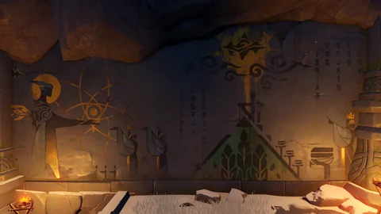

Mondstadt · Ancient Civilizations
Sal Vindagnyr
Sal Vindagnyr was an ancient settlement on Dragonspine. In-game tablets and quests describe a kingdom that was struck by a Skyfrost Nail, leaving the mountain’s ruins and frozen history behind.

The kingdom on Dragonspine
Sal Vindagnyr was an ancient settlement on the mountain now called Dragonspine. The surviving ruins show a community that once lived in a milder climate and had a close relationship with the people and powers around it.
The story is pieced together from ancient carvings, the Frostbearing Tree, the Skyfrost Nail, and the people who lived through the disaster. These sources do not give a complete census or a full political history, but they establish that the mountain’s present landscape was created by a catastrophe.
The Skyfrost Nail
A Skyfrost Nail fell from the heavens and struck the region. The impact changed the environment and destroyed much of the kingdom. The game connects this event to Celestia’s intervention, though the exact reason for the Nail’s descent is not fully explained in the Dragonspine records.
The Nail remains visible as a landmark. Its location and the mountain’s frozen remains let players see the result of the event rather than learning about it only through dialogue.
The people and their choices
The old carvings describe a priestess, a princess, and the kingdom’s people facing a disaster they could not stop. Their story is personal as well as ancient: it shows how a large world event changes the lives of ordinary families.
The records leave gaps about the exact order of every death and decision. Treat reconstructions as a timeline built from clues, and keep speculative details clearly labeled.
A story still present in Mondstadt
Dragonspine is physically part of Mondstadt’s region, but Sal Vindagnyr’s history predates the nation’s present form. The mountain links local exploration to Teyvat’s older questions about Celestia, ancient civilizations, and the cost of divine power.
The quest In the Mountains is the easiest route through the evidence. The carvings and item descriptions add context for readers who want to continue beyond the quest.
This is an original CoreGG reading guide, not an official HoYoverse article or a reproduction of the game text. Source links below identify the records used so you can check the original context.
Sources & references
Check these sources for the original game text and reference trail.